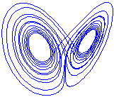
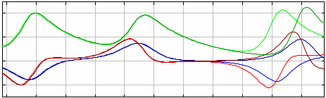

| The Lorenz attractor, displayed in the right image, shows the sensibility of simple non-linear ordinary differential equations to initial conditions. The simulation shows the evolution of two trajectories which differ in one part in a million (in the z coordinate). The trajectories remain close for a long period of time until, suddenly, they separate abruptly. |  |
